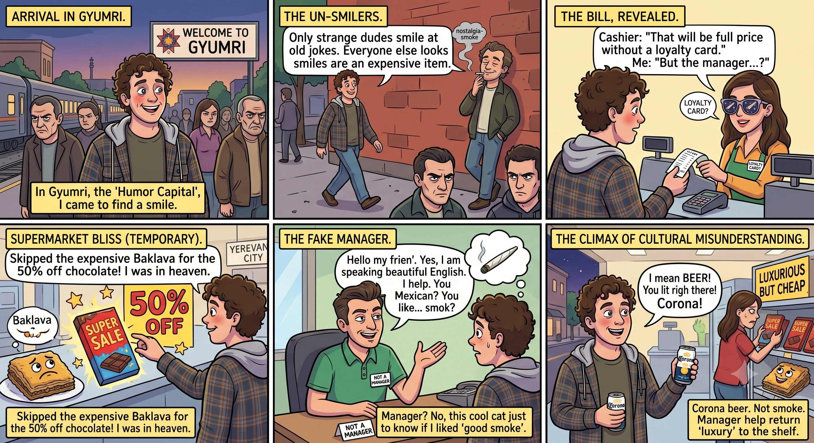

The Humor Capital
Written in Gyumri, Armenia • June 2026

I find myself in a place called Gyumri. It’s known by everyone inside Armenia as the humor capital of the country. I chose to come here because I wanted to laugh—mostly because, for some reason, a genuine smile is a rare commodity in this nation. People carry themselves as if the government charges them a tax just for looking pleased. Sure, you’ll see strange dudes loitering on the street corners smiling with a cigarette dangling from their lips, but they’re usually just reminiscing about something someone muttered years ago. Back before the hyperinflation hit, before the swarms of foreigners started arriving, and before they were forced to realize that their isolated little bubble had completely burst. I genuinely wonder what kind of jokes they tell in these parts. Do they laugh at classic gags like people slipping on banana peels, or is it all based on chaotic, drunken shenanigans?
Yesterday, I ducked into a local supermarket to hunt for a quick pick-me-up. Something sweet. A tray of baklava had been giving me the eye for a few days, but I ultimately decided to pass it up for a bar of chocolate that was marked on sale. It was fifty percent off, and for a fleeting second, I thought I had found heaven.
I took my prize to the checkout counter, only to watch the cashier ring it up for the full, uncompromised price. A polite lady explained that the discount only applied if I possessed a store loyalty card, meaning I would have to wait around for a manager to come sort out a void. Instead of a manager, I ended up speaking to a store clerk who masterfully acted like he was in charge, even though he clearly wasn't. His command of English was incredibly erratic; he would effortlessly utter a sequence of complex, full sentences, look me dead in the eye, and then casually say, “Oh, I don't speak English.”
He asked where I was from, and the moment I told him I was Mexican, he immediately pivoted, asking upfront if I enjoyed a "good smoke." I knew exactly what kind of smoke he was implying. But I had absolutely zero desire to negotiate a marijuana connection with a stranger in the middle of a supermarket. Not in a strange town. And definitely not in a strange, heavy part of the world where regular people refuse to smile.
So, I just played it cool, smiled, and redirected the line: “Oh sure, we have great beer. In fact, you sell it right over there. Corona.”
“Oh, yeah,” he nodded. Just then, the actual manager finally materialized, helping me return my short-lived luxury chocolate bar right back to its forgotten shelf of discounted items.